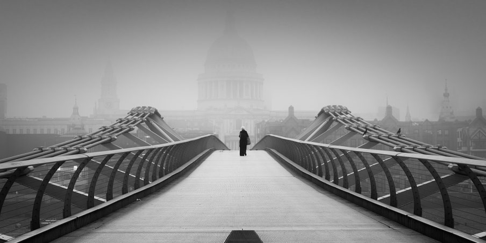

Foggy Faith
London
Awards:
- Photography Excellence Award: Miguel Salvado Pérez has been honored with the prestigious Photography Excellence Award for his outstanding contributions to the world of minimalist photography. This award recognizes his dedication and passion for capturing the essence of London.
- Innovation in Photography Prize: Miguel's innovative approach to photography has earned him the Innovation in Photography Prize, celebrating his unique ability to create captivating images that resonate with viewers.
Featured in Magazines:
- Artistry Magazine: Miguel's work has graced the pages of Artistry Magazine, where his minimalist style was showcased in a captivating feature article. His images have left readers inspired by the beauty of simplicity.
- Captured Beauty: Miguel Salvado Pérez's exceptional photography was prominently featured in the renowned magazine, Captured Beauty, where his ability to capture the timeless allure of London left readers in awe.
Photographic Details:
- Exposure: 1/60 seconds
- Aperture: f/8
- ISO: 100
- Focal Length: 24mm
- Camera: Nikon D850
- Lens: Nikkor 24-70mm f/2.8